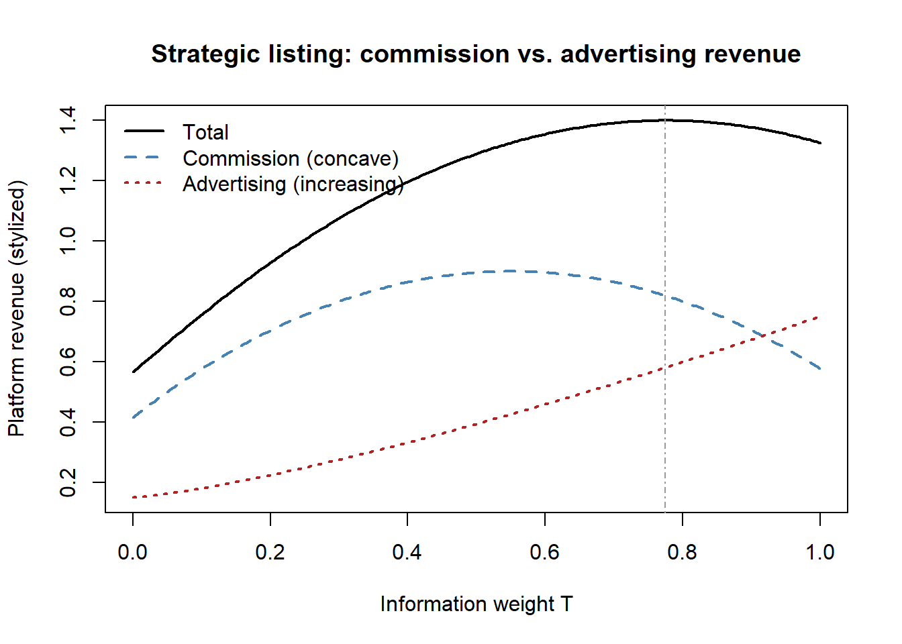
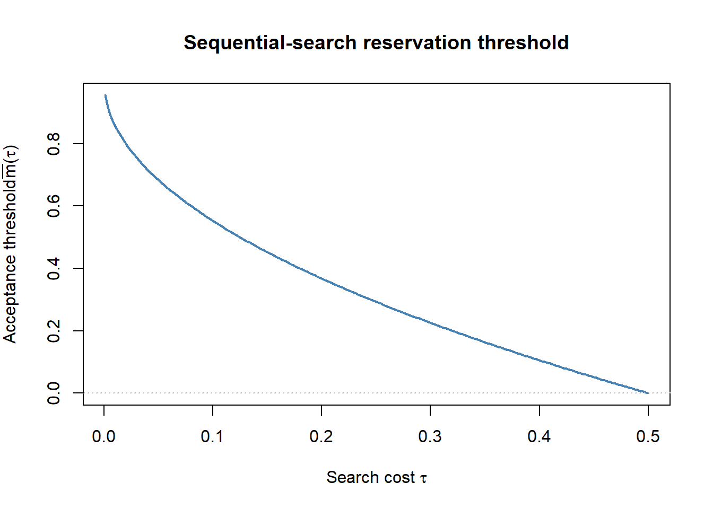

flowchart TD
P["Platform"]
P -->|"hosts, charges fee f or commission φ"| M["Marketplace<br/>(third-party sellers)"]
P -->|"may enter and sell directly"| R["Retailer<br/>(first-party product)"]
P -->|"ranks, filters, recommends"| I["Information intermediary<br/>(search & display)"]
M --> C["Consumers"]
R --> C
I --> C
C -->|"reviews, clicks, purchases"| P
58 Analytical Modeling Seminar
Analytical modeling in marketing is the practice of building stylized game-theoretic models—small enough to solve in closed form, rich enough to isolate one strategic force—and reading their equilibria for managerial and policy implications. Where the empirical chapters of this book estimate parameters from data, this chapter studies the logic that generates the data: why competing firms randomize discounts, when a manufacturer wants its retailers to compete, why personalization can hurt the firm doing it. The unifying method is the same throughout. State the players, their information, and the timing; solve backward for subgame-perfect (or perfect Bayesian) equilibrium; and characterize how the equilibrium moves with the primitives.
This chapter is built as a full-semester PhD seminar—the analytical / game-theoretic (economic-theory) track taught in the quantitative-modeling sequence of top doctoral programs. It opens with tools before topics: a demanding refresher in non-cooperative game theory and the solution concepts the literature actually uses (Nash, subgame perfection, Perfect Bayesian Equilibrium, and the mechanism-design / information-design vocabulary). It then walks the canonical application areas in the order theory developed them—price competition, promotions, channels, advertising, product line and signaling, information and disclosure, salesforce contracting—before turning to the dynamic and behavioral frontier. An analytical model is not a forecast; it is a controlled thought experiment whose value is the comparative static it isolates. The seminar habit worth internalizing is to ask, of any result, which single assumption is doing the work—because that is the assumption a referee will attack and the one a practitioner must check against their own market.
Presenting analytical work
Seminar craft and modeling craft are different skills. Three conventions reduce the friction of presenting theory to a skeptical audience: lead with the research question and the headline result, not the findings table, so the room is oriented before it can attack; never deny a known limitation—state it and give the reason the model still isolates the force of interest; and hold extensions in reserve, surfacing them only if the audience does not raise them first. These are rhetorical, not scientific, but they materially change how a correct result is received.
58.1 Semester arc
The analytical-modeling seminar trains students to build and solve equilibrium models of marketing phenomena—to take a managerial puzzle, strip it to a tractable game, solve for equilibrium, and extract a testable, often counterintuitive comparative-static result. The semester therefore opens with tools before topics: a fast, demanding refresher in non-cooperative game theory and the solution concepts the literature uses. Students arriving from a first-year microeconomic-theory sequence find weeks 1–2 a consolidation; those from an empirical background find them the steepest climb of the course.
The middle of the semester walks the canonical application areas in the order theory developed them: price competition and promotions; vertical channels and distribution; advertising as persuasion and as information; product line, quality, and signaling; information, disclosure, and reviews; and salesforce / principal–agent contracting. The ordering is pedagogically deliberate—each block reuses and sharpens the tools introduced earlier (promotions motivate mixed strategies; channels motivate double-marginalization and contracting machinery; signaling motivates PBE; salesforce motivates moral hazard and the revelation principle). Throughout, the seminar insists on the distinction between modeling for insight (the marketing-science tradition: simple models whose comparative statics overturn a managerial intuition) and modeling for measurement (the structural / empirical-IO tradition of the adjacent seminar). The recurring refrain is Moorthy’s and Wernerfelt’s question: what is the simplest model that produces this effect, and is the effect robust to the obvious extensions?
The final third turns to dynamics and frontier structure: durable-goods and forward-looking-consumer pricing; behavior-based price discrimination and customer recognition; network effects, platforms, and two-sided markets; and behavioral industrial organization. The course closes with a synthesis week on research craft—how to find a modeling question, how to know when a model is “done,” how analytical and empirical work speak to each other, and how to referee theory. Assessment is uniformly a referee report plus an original model proposal, because the terminal skill is not reading theory but producing it.
58.2 Week 1 — Game-Theory Tools I: Static Games, Nash, and the Modeling Stance
Topic. Normal-form games and the “modeling for insight” stance that defines analytical marketing. Foundational.
Subtopics. Normal-form games and Nash equilibrium; pure vs. mixed strategies; best-response and reaction functions; Bertrand vs. Cournot as the two workhorses of marketing competition; what makes a good marketing-theory question.
Methods. Writing down a game (players, actions, payoffs, timing, information); solving for pure- and mixed-strategy Nash; comparative statics.
Key readings.
- Moorthy, K. S. (1985), “Using Game Theory to Model Competition,” Journal of Marketing Research 22(3), pp. 262–282. (DOI to verify) — the field’s manifesto for analytical marketing modeling. [F]
- Tirole, J. (1988), The Theory of Industrial Organization, chs. 0–5, MIT Press. (book) — standard IO background on competition and the solution concepts the literature reuses. [F]
- Fudenberg, D. and Tirole, J. (1991), Game Theory, selected chapters, MIT Press. (book) — the reference grammar for everything that follows. [F]
Debate. Insight vs. realism; the role of functional-form assumptions; when a “result” is an artifact of the demand specification rather than a feature of the strategic environment.
58.3 Week 2 — Game-Theory Tools II: Dynamic Games, Information, and Refinement
Topic. Extensive-form games, incomplete information, and the equilibrium refinements modern marketing theory relies on. Foundational.
Subtopics. Extensive form and backward induction; subgame perfection; games of incomplete information and Bayesian Nash equilibrium; Perfect Bayesian and sequential equilibrium; signaling and belief refinements (intuitive criterion); a first look at mechanism/information design as the modern toolkit.
Methods. Solving signaling games; constructing and refining off-path beliefs; reading an information-design argument.
Key readings.
- Fudenberg, D. and Tirole, J. (1991), Game Theory (dynamic games, PBE, refinements), MIT Press. (book) — the canonical treatment of refinement. [F]
- Iyer, G. and Singh, S. (2022), “Persuasion Contest: Disclosing Own and Rival Information,” Marketing Science 41(4), pp. 682–709, doi:10.1287/mksc.2021.1333 — a frontier illustration of how Bayesian-persuasion / information-design ideas enter competitive marketing; the “where the tools are going” capstone. [R]
Debate. Multiplicity of equilibria and the legitimacy of refinements; whether information design is a genuinely new toolkit or a repackaging of signaling.
58.4 Week 3 — Price Competition and Differentiation
Topic. How firms soften price competition through differentiation. Foundational.
Subtopics. The Bertrand paradox and its resolutions; horizontal differentiation (Hotelling / spatial competition) and the principle of (minimum/maximum) differentiation; vertical differentiation and quality; the strategic value of softening price competition.
Methods. Solving location-then-price two-stage games; deriving differentiation as an equilibrium device.
Key readings.
- Hotelling, H. (1929), “Stability in Competition,” Economic Journal 39(153), pp. 41–57. (DOI to verify) — the origin of spatial differentiation. [F]
- Iyer, G. and Kuksov, D. (2012), “Competition in Consumer Shopping Experience,” Marketing Science 31(6), pp. 913–933, doi:10.1287/mksc.1120.0734 — shows when a non-price instrument (experience) differentiates vs. triggers escalation. [R]
- Pazgal, A., Soberman, D., and Thomadsen, R. (2016), “Profit-Increasing Asymmetric Entry,” International Journal of Research in Marketing 33(1), pp. 107–122, doi:10.1016/j.ijresmar.2015.08.002 — counterintuitive: entry can raise incumbent profit by relaxing price competition. [R]
Debate. Do firms differentiate to avoid competition or to match heterogeneous tastes? Is “minimum differentiation” robust to the pricing stage?
58.5 Week 4 — Promotions, Price Discrimination, and Mixed-Strategy Pricing
Topic. Why competing firms randomize discounts, and when price discrimination is constrained. Foundational (Narasimhan) → frontier (price-matching, fairness).
Subtopics. Why competing firms randomize discounts (loyal vs. switcher segments); temporal price discrimination and Hi-Lo vs. EDLP; price-matching guarantees as discrimination vs. collusion; behavioral limits on price discrimination.
Methods. Constructing mixed-strategy equilibria; segment-based price-discrimination models.
Key readings.
- Narasimhan, C. (1988), “Competitive Promotional Strategies,” Journal of Business 61(4), pp. 427–449, doi:10.1086/296442 — the mixed-strategy rationale for randomized promotions (Narasimhan 1988). [F]
- Chen, Y., Narasimhan, C., and Zhang, Z. J. (2001), “Consumer Heterogeneity and Competitive Price-Matching Guarantees,” Marketing Science 20(3), pp. 300–314, doi:10.1287/mksc.20.3.300.9766 — reframes a common practice as price discrimination, not collusion. [R]
- Feinberg, F. M., Krishna, A., and Zhang, Z. J. (2002), “Do We Care What Others Get? A Behaviorist Approach to Targeted Promotions,” Journal of Marketing Research 39(3), pp. 277–291, doi:10.1509/jmkr.39.3.277.19108 — social comparison / fairness constrains targeted discounting. [R]
- Varian, H. R. (1980), “A Model of Sales,” American Economic Review 70(4), pp. 651–659. (DOI to verify) — the canonical equilibrium-dispersion model of promotions. [F]
Debate. Are promotions discrimination, inventory/competition artifacts, or behavioral cues? Do price-match guarantees raise or lower prices?
58.6 Week 5 — Channels and Distribution I: Coordination and Double Marginalization
Topic. Why decentralized channels underperform and which contracts fix it. Foundational.
Subtopics. Double marginalization and channel coordination; two-part tariffs, quantity discounts, and resale price maintenance as coordinating contracts; coordinating channels under price and non-price competition; manufacturer control of retail competition.
Methods. Vertical-contracting models; designing wholesale contracts to align incentives; manufacturer-Stackelberg leadership.
Key readings.
- Jeuland, A. P. and Shugan, S. M. (1983), “Managing Channel Profits,” Marketing Science 2(3), pp. 239–272. (DOI to verify) — the foundational channel-coordination paper. [F]
- Iyer, G. (1998), “Coordinating Channels Under Price and Nonprice Competition,” Marketing Science 17(4), pp. 338–355, doi:10.1287/mksc.17.4.338 — the multi-instrument result: the optimal degree of retail competition differs across price and service. [F]
- Moorthy, K. S. (1987), “Managing Channel Profits: Comment,” Marketing Science 6(4), pp. 375–379. (DOI to verify) — the canonical refinement of the coordination argument. [F]
Debate. Which contractual instruments achieve coordination, and why is coordination so often not observed in practice?
58.7 Week 6 — Channels and Distribution II: Power, Conflict, and the Retail-Media Frontier
Topic. Channel power, bargaining, and the modern retail-media turn. Foundational → frontier.
Subtopics. Channel power and bargaining; vertical restraints and exclusivity; private labels and the manufacturer–retailer game; the modern “retail media” / in-store-media turn.
Methods. Bargaining solutions in vertical settings; dynamic channel pricing.
Key readings.
- Dukes, A. and Liu, Y. (2010), “In-Store Media and Distribution Channel Coordination,” Marketing Science 29(1), pp. 94–107, doi:10.1287/mksc.1080.0483 — in-store-media revenue alters retailer incentives and can mitigate double marginalization (an early theory of retail media networks). [R]
- Cosguner, K., Chan, T. Y., and Seetharaman, P. B. (2018), “Dynamic Pricing in a Distribution Channel in the Presence of Switching Costs,” Management Science 64(3), pp. 1212–1229, doi:10.1287/mnsc.2016.2649 — bridges channels and dynamics: inertial demand lets the retailer raise margins. [R]
- McGuire, T. W. and Staelin, R. (1983), “An Industry Equilibrium Analysis of Downstream Vertical Integration,” Marketing Science 2(2), pp. 161–191. (DOI to verify) — the classic case for decentralization as a strategic commitment. [F]
Debate. Who holds channel power and how is it modeled (Nash bargaining vs. Stackelberg)? Is retail media a coordination device or a rent-extraction tool?
58.8 Week 7 — Advertising: Persuasion, Information, and Targeting
Topic. Advertising as persuasion vs. information, and the strategic logic of targeting. Foundational (Nelson) → frontier (targeting, cheap talk).
Subtopics. Advertising as persuasion vs. information vs. complement; informative advertising and price competition; the targeting of advertising and its effect on differentiation; advertising as (cheap) talk.
Methods. Equilibrium advertising-intensity models; cheap-talk and verifiable-disclosure games.
Key readings.
- Iyer, G., Soberman, D., and Villas-Boas, J. M. (2005), “The Targeting of Advertising,” Marketing Science 24(3), pp. 461–476, doi:10.1287/mksc.1050.0117 — the modern result that advertising less to switchers raises differentiation and softens price competition (Iyer, Soberman, and Villas-Boas 2005). [F]
- Gardete, P. M. (2013), “Cheap-Talk Advertising and Misrepresentation in Vertically Differentiated Markets,” Marketing Science 32(4), pp. 609–621, doi:10.1287/mksc.2013.0772 — when unverifiable quality claims can still credibly transmit information. [R]
- Grossman, G. M. and Shapiro, C. (1984), “Informative Advertising with Differentiated Products,” Review of Economic Studies 51(1), pp. 63–81. (DOI to verify) — the workhorse model of informative advertising and price competition. [F]
Debate. Is advertising informative, persuasive, or a complementary good? When does targeting intensify vs. soften competition?
58.9 Week 8 — Product Line, Quality, and Signaling
Topic. Designing a product line and signaling unobservable quality. Foundational.
Subtopics. Product-line design and self-selection (second-degree price discrimination / damaged goods); quality choice; price and advertising as signals of quality; product variety with consumer evaluation costs.
Methods. Mechanism-design / self-selection (incentive-compatibility, single-crossing); separating vs. pooling signaling equilibria.
Key readings.
- Villas-Boas, J. M. (2009), “Product Variety and Endogenous Pricing with Evaluation Costs,” Management Science 55(8), pp. 1338–1346, doi:10.1287/mnsc.1090.1024 — fewer products can commit the firm not to extract all surplus when evaluation is costly. [F]
- Moorthy, K. S. (1984), “Market Segmentation, Self-Selection, and Product Line Design,” Marketing Science 3(4), pp. 288–307. (DOI to verify) — the foundational self-selection model of the product line. [F]
- Milgrom, P. and Roberts, J. (1986), “Price and Advertising Signals of Product Quality,” Journal of Political Economy 94(4), pp. 796–821. (DOI to verify) — the canonical model of dissipative signaling of quality. [F]
Debate. When is dissipative signaling (e.g., uninformative ad spend) credible? How fine should a product line be, and is cannibalization a bug or a feature?
58.10 Week 9 — Information, Disclosure, and Online Reviews
Topic. Strategic disclosure, manipulated word of mouth, and information design in markets. Frontier (with foundational disclosure roots).
Subtopics. Verifiable disclosure and unraveling; strategic / selective disclosure by firms and media; manipulation of word of mouth and reviews; information design / Bayesian persuasion in markets.
Methods. Disclosure/unraveling arguments; persuasion as choice of a signal structure.
Key readings.
- Mayzlin, D. (2006), “Promotional Chat on the Internet,” Marketing Science 25(2), pp. 155–163, doi:10.1287/mksc.1050.0137 — firms post disguised promotional chat; rational consumers partially undo it. [F]
- Zhu, Y. and Dukes, A. (2015), “Selective Reporting of Factual Content by Commercial Media,” Journal of Marketing Research 52(1), pp. 56–76, doi:10.1509/jmr.12.0379 — endogenous selective (not false) reporting by ad-funded media. [R]
- Iyer, G. and Singh, S. (2022), “Persuasion Contest: Disclosing Own and Rival Information,” Marketing Science 41(4), pp. 682–709, doi:10.1287/mksc.2021.1333 — competitive information design. [R]
- Kamenica, E. and Gentzkow, M. (2011), “Bayesian Persuasion,” American Economic Review 101(6), pp. 2590–2615. (DOI to verify) — the foundational statement of persuasion as the choice of a signal structure. [F]
Debate. Does information unravel in equilibrium? When can a sender benefit from committing to a noisy signal?
58.11 Week 10 — Salesforce, Incentives, and Principal–Agent Theory
Topic. Optimal sales compensation under moral hazard, and the structural turn. Foundational (Basu–Lal–Srinivasan–Staelin) → frontier (structural compensation).
Subtopics. Moral hazard and optimal sales-compensation contracts; quotas, commissions, and bonuses; multitasking and contract uniformity; the “estimate-then-optimize-then-implement” structural turn.
Methods. Principal–agent contracting (IC and IR constraints); multitasking; bridging theory to estimable dynamic models.
Key readings.
- Misra, S. and Nair, H. S. (2011), “A Structural Model of Sales-Force Compensation Dynamics: Estimation and Field Implementation,” Quantitative Marketing and Economics 9(3), pp. 211–257, doi:10.1007/s11129-011-9096-1 — recovers agents’ dynamic response to nonlinear incentives and redesigns the plan in the field (Misra and Nair 2011). [R]
- Daljord, Ø., Misra, S., and Nair, H. S. (2016), “Homogeneous Contracts for Heterogeneous Agents: Aligning Sales Force Composition and Compensation,” Journal of Marketing Research 53(2), pp. 161–182, doi:10.1509/jmr.14.0018 — why uniform contracts can be an equilibrium given selection. [R]
- Basu, A. K., Lal, R., Srinivasan, V., and Staelin, R. (1985), “Salesforce Compensation Plans: An Agency Theoretic Perspective,” Marketing Science 4(4), pp. 267–291. (DOI to verify) — the foundational agency model of sales compensation. [F]
Debate. How rich should real contracts be relative to theory’s predictions? Why are observed plans simpler than the optimum?
58.12 Week 11 — Dynamic Models I: Durable Goods, Forward-Looking Consumers, and Learning
Topic. Pricing against a forward-looking buyer and the seller’s own future. Foundational (Coase, Bass) → frontier (consumer learning, dynamic pricing).
Subtopics. The Coase conjecture and durable-goods pricing; intertemporal price discrimination with forward-looking consumers; new-product diffusion and dynamic pricing; consumer learning and endogenous loyalty.
Methods. Dynamic optimization / Markov-perfect equilibrium; the difference between open-loop and closed-loop strategies.
Key readings.
- Villas-Boas, J. M. (2004), “Consumer Learning, Brand Loyalty, and Competition,” Marketing Science 23(1), pp. 134–145, doi:10.1287/mksc.1030.0044 — forward-looking marginal consumers can be less price-sensitive than myopic ones. [F]
- Nair, H. (2007), “Intertemporal Price Discrimination with Forward-Looking Consumers: Application to the US Market for Console Video-Games,” Quantitative Marketing and Economics 5(3), pp. 239–292, doi:10.1007/s11129-007-9026-4 — the structural counterpart; quantifies declining-price paths for durables. [R]
- Coase, R. H. (1972), “Durability and Monopoly,” Journal of Law and Economics 15(1), pp. 143–149. (DOI to verify) — the conjecture that a durable-goods monopolist competes with its own future. [F]
Debate. How binding is the Coase conjecture with commitment devices? Myopic vs. rational-expectations consumers in pricing models.
58.13 Week 12 — Dynamic Models II: Behavior-Based Price Discrimination and Customer Recognition
Topic. Recognizing past customers and the strategic perils of personalization. Frontier.
Subtopics. Customer recognition and price cycles; behavior-based price discrimination (BBPD); poaching vs. retention; behavior-based advertising; the strategic perils of personalization.
Methods. Two-period (and infinite-horizon) recognition games; mapping privacy/data regimes to equilibrium prices.
Key readings.
- Villas-Boas, J. M. (2004), “Price Cycles in Markets with Customer Recognition,” RAND Journal of Economics 35(3), pp. 486–501, doi:10.2307/1593704 — endogenous price cycles over the customer relationship. [F]
- Zhang, J. (2011), “The Perils of Behavior-Based Personalization,” Marketing Science 30(1), pp. 170–186, doi:10.1287/mksc.1100.0607 — personalization can intensify competition and erode profits. [R]
- Chen, Y., Narasimhan, C., and Zhang, Z. J. (2001), “Individual Marketing with Imperfect Targetability,” Marketing Science 20(1), pp. 23–41, doi:10.1287/mksc.20.1.23.10201 — when better targeting is “win-win” vs. cut-throat. [R]
- Shen, Q. and Villas-Boas, J. M. (2018), “Behavior-Based Advertising,” Management Science 64(5), pp. 2047–2064, doi:10.1287/mnsc.2016.2719 — BBPD’s advertising analogue. [R]
Debate. Does data-driven targeting help or hurt the firms that use it? What is the welfare and privacy verdict on BBPD?
58.14 Week 13 — Network Effects, Platforms, and Two-Sided Markets
Topic. Network effects, tipping, and the platform-design problem. Frontier (with foundational network-effects roots).
Subtopics. Direct and indirect network effects; tipping and winner-take-all dynamics; two-sided pricing and the platform-design problem; commercial-network formation.
Methods. Two-sided pricing models; coordination games and tipping; network-formation equilibria.
Key readings.
- Dubé, J.-P., Hitsch, G. J., and Chintagunta, P. K. (2010), “Tipping and Concentration in Markets with Indirect Network Effects,” Marketing Science 29(2), pp. 216–249, doi:10.1287/mksc.1090.0541 — measures tipping from indirect network effects (video-game consoles). [R]
- Katona, Z. and Sarvary, M. (2008), “Network Formation and the Structure of the Commercial World Wide Web,” Marketing Science 27(5), pp. 764–778, doi:10.1287/mksc.1070.0349 — equilibrium link-buying explains web specialization (Katona and Sarvary 2008). [R]
- Wilbur, K. C. (2008), “A Two-Sided, Empirical Model of Television Advertising and Viewing Markets,” Marketing Science 27(3), pp. 356–378, doi:10.1287/mksc.1070.0303 — the two-sided media-market modeling benchmark. [R]
- Katz, M. L. and Shapiro, C. (1985), “Network Externalities, Competition, and Compatibility,” American Economic Review 75(3), pp. 424–440. (DOI to verify) — the foundational statement of network externalities (Katz and Shapiro 1985). [F]
Debate. When do markets tip? Who should subsidize which side, and does platform competition discipline pricing?
58.15 Week 14 — Behavioral Industrial Organization and Research Craft (Synthesis)
Topic. Non-standard consumers in equilibrium, and the craft of producing and refereeing theory. Frontier.
Subtopics. Models with non-standard consumers—reference dependence, fairness, limited attention, naïveté/present bias; how behavioral assumptions change equilibrium predictions; research craft: finding a question, knowing when a model is “done,” theory ↔︎ empirics, and refereeing.
Methods. Embedding behavioral primitives in equilibrium models; reading and writing a referee report; constructing an original modeling proposal.
Key readings.
- Zhu, Y. and Dukes, A. (2017), “Prominent Attributes Under Limited Attention,” Marketing Science 36(5), pp. 683–698, doi:10.1287/mksc.2017.1037 — firms make attributes prominent to exploit limited attention, reshaping price competition. [R]
- Misra, K., Schwartz, E. M., and Abernethy, J. (2019), “Dynamic Online Pricing with Incomplete Information Using Multiarmed Bandit Experiments,” Marketing Science 38(2), pp. 226–252, doi:10.1287/mksc.2018.1129 — learning-and-earning pricing where the firm, not just the consumer, is the learner. [R]
- Dubé, J.-P. and Misra, S. (2023), “Personalized Pricing and Consumer Welfare,” Journal of Political Economy 131(1), pp. 131–189, doi:10.1086/720793 — a capstone tying theory, ML, and welfare. [R]
- DellaVigna, S. (2009), “Psychology and Economics: Evidence from the Field,” Journal of Economic Literature 47(2), pp. 315–372. (DOI to verify) — the survey that frames behavioral primitives for equilibrium modeling. [F]
Debate. Do behavioral models predict better or merely rationalize? How should analytical and empirical marketing inform each other?
58.16 Foundational vs. frontier at a glance
| Block | Foundational core (the “must-know”) | Frontier extensions (active research) |
|---|---|---|
| Tools (Wk 1–2) | Nash, SPE, PBE, signaling refinements | Bayesian persuasion / information design |
| Pricing & promotions (Wk 3–4) | Hotelling differentiation; Narasimhan mixed-strategy promotions | fairness / social-comparison limits; price-matching as discrimination |
| Channels (Wk 5–6) | Jeuland–Shugan / Iyer coordination; double marginalization | retail media; dynamic channel pricing with switching costs |
| Advertising (Wk 7) | Iyer–Soberman–Villas-Boas targeting; informative-advertising models | cheap-talk / disclosure advertising |
| Product line & signaling (Wk 8) | Moorthy self-selection; Milgrom–Roberts signaling | endogenous variety with evaluation costs |
| Information & disclosure (Wk 9) | unraveling; Mayzlin promotional chat | competitive information design |
| Salesforce / P-A (Wk 10) | Basu–Lal–Srinivasan–Staelin; Holmström | structural compensation, field implementation |
| Dynamics (Wk 11–12) | Coase, Bass; Villas-Boas learning & price cycles | forward-looking-consumer structural models; BBPD & personalization perils |
| Platforms (Wk 13) | Katz–Shapiro / Rochet–Tirole network effects | empirical tipping; two-sided media models |
| Behavioral IO (Wk 14) | reference dependence, limited attention | prominence/attention competition; bandit pricing; personalized-pricing welfare |
Reading the map. A student must be fluent in the left column to pass qualifying exams; the right column is where dissertations are written. The seminar’s value-add over a pure economics IO course is the marketing-specific frontier—channels, salesforce, targeting, reviews/WOM, and the personalization/privacy interface—where marketing scholars, not economists, set the agenda.
58.17 How this chapter expands
The week-by-week map above is the seminar’s backbone; the worked models below are its frontier face. The remaining sections develop a connected set of platform-design models in full detail—players, information, equilibrium concept, and the single assumption that breaks each result—so that students see how the Week 5–6 channel machinery, the Week 13 two-sided-market logic, and the Week 14 personalization frontier combine in current research. They are deliberately deeper than a syllabus entry: each is a template for the kind of original model a seminar referee report and proposal must produce.
Three priorities should guide future revisions. First, verify and promote the named-but-uncited canon: works flagged (DOI to verify) above—Moorthy (1984, 1985, 1987), Jeuland–Shugan (1983), McGuire–Staelin (1983), Basu–Lal–Srinivasan–Staelin (1985), Milgrom–Roberts (1986), Coase (1972), Hotelling (1929), Varian (1980), Grossman–Shapiro (1984), Kamenica–Gentzkow (2011), Katz–Shapiro (1985), and DellaVigna (2009)—are the textbook spine of the seminar and should be confirmed against the Crossref version of record and added to the bibliography. Second, track the fast-moving frontier modules: information design, behavioral IO, platforms/two-sided markets, and the personalization–privacy interface each turn over 2–3 version-of-record papers per revision cycle. Third, consider promoting two modules to their own chapters: platforms / two-sided markets and the analytics–theory bridge (bandit pricing, ML-driven personalized pricing) are both large enough to stand alone.
58.18 Worked Frontier: Platform Competition and Design
A platform is a firm that intermediates transactions between two or more groups whose participation decisions are interdependent—the canonical two-sided market (Katz and Shapiro 1985). Modern marketplaces complicate the classical picture in a way that organizes most of the recent theory: the platform is not a neutral intermediary but a strategic actor that can host third-party sellers, compete against them as a first-party retailer, and control the information consumers receive through search and recommendation. The platform’s design levers—fees, entry, ranking, bundling, personalization—are the object of study.
Figure 58.1 fixes the three roles a platform plays in the models that follow. The same firm can occupy more than one node simultaneously, and the strategic interest of the literature lies precisely in the conflicts of interest that arise when it does.
58.18.1 The Threat of Platform Entry: Amazon’s Mid-Tail
The defining tension of a hybrid platform is that hosting a successful seller generates a per-unit fee today but reveals a profitable market the platform may enter and capture tomorrow. Jiang, Jerath, and Srinivasan (2011) formalize this as a signaling problem under the heading of the mid-tail: products too popular to be left to independent sellers (the platform will take them) yet not so commoditized that the platform sells them itself. The counterintuitive equilibrium behavior is that a high-demand seller may suppress its own sales to avoid revealing demand and triggering entry.
Consider one seller facing a platform with fixed entry cost \(F > 0\). In each of two periods the seller sets a price \(p\) and a service level \(e\), and demand is \[ q(p, e) = \gamma + e - b\,p, \tag{58.1}\] where \(\gamma\) is the demand intercept, \(b > 0\) the price sensitivity, and service is costly at the convex rate \(s(e) = k e^{2}\). The seller’s type is its demand intercept: high, \(\gamma = \gamma_H\), with prior probability \(\theta\), or low, \(\gamma = \gamma_L\), with probability \(1 - \theta\). The seller knows its type; the platform does not. The platform charges a per-unit fee \(f\), constant across the two periods, and after observing first-period outcomes decides whether to pay \(F\) and enter.
The timing is a two-stage signaling game. In stage one, nature draws the type, the platform commits to \(f\), and the seller chooses whether to sell and, if so, \((e^{(1)}, p^{(1)})\). In stage two, the platform updates its belief about the type from observed first-period sales and decides whether to enter; the seller, if still active, chooses \((e^{(2)}, p^{(2)})\). The solution concept is perfect Bayesian equilibrium (PBE): strategies are sequentially rational given beliefs, and beliefs are derived from strategies by Bayes’ rule wherever possible.
The economics turn on two thresholds. If \(F\) is large, entry is unprofitable regardless of demand and the platform commits to not entering; absent the threat, both seller types provide the same (high) service in both periods, because there is nothing to hide. If \(F\) is small enough that the platform would enter upon learning \(\gamma = \gamma_H\), the high type faces a dynamic disincentive: high first-period sales betray high demand and invite entry, which expropriates its second-period profit. Three regimes result, summarized in Table 58.1.
| Regime | Platform information | Equilibrium behavior |
|---|---|---|
| Full information | Platform knows the type | Platform enters iff demand is high and \(F\) is low; first-best service in both periods |
| Commitment not to enter | Type irrelevant to entry | Both types provide high service in both periods; no signaling distortion |
| Incomplete information, entry possible | Platform infers type from sales | Separating: only the high type stays, earns in period 1, zero in period 2. Pooling: the high type mimics the low type’s restrained sales to mask its demand |
The managerial reading inverts naive intuition. A high-demand mid-tail seller can be better off under the threat of entry than under a platform that commits never to enter, because the threat lets the platform justify a low per-unit fee \(f\) in expectation—the platform forgoes fee revenue to keep the option of entering alive—and the low fee benefits both types ex ante. Consumer surplus follows a predictable arc: entry, when it occurs, reduces surplus early (the platform exploits its informational advantage) and raises it later. Finally, consumer reviews that proxy for service quality sharpen the platform’s inference and let it raise the optimal fee when the prior probability of a high type is low, and lower it when that probability is high. The result that breaks the clean separating equilibrium is the cost of mimicry: pooling survives only when the high type’s loss from restraining first-period sales is smaller than its expected loss from triggering entry.
58.18.2 Search Neutrality and Personalized Ranking
When the platform also ranks the sellers it hosts, its ranking rule is a competitive instrument. Search neutrality—a policy requiring the platform to rank by relevance alone, without favoring its own or any seller’s listing—sounds pro-consumer by analogy with net neutrality. Zou and Zhou (2021) show the analogy fails: with personalized search, neutrality can soften price competition and reduce consumer surplus, even as it improves the relevance of what consumers see.
The mechanism is that personalized ranking, unconstrained, lets the platform steer each consumer toward the listing that best fits them, which intensifies price competition because sellers know a low price can win prominence. Neutrality removes that lever: rankings become relevance-only and price loses its power to buy position, so sellers compete less aggressively and prices rise. Crucially the effect is specific to online personalized search; a neutrality rule applied to an offline store with a uniform display has no analogous price effect, because there is no personalization to suppress.
Formally, two consumer segments differ in their taste for first- versus third-party products and search sequentially. Search has a pre-search phase, in which consumers costlessly learn expected valuations, and a costly inspection phase, in which they learn exact match values. A consumer’s action set at any point is to buy the prominent product, to stop and not purchase, or to pay the search cost to inspect a non-prominent product. The game has three stages: sellers set prices, the platform sets personalized rankings, and consumers purchase. The platform trades commission earned on a relevance-maximizing ranking against the sales it can divert by promoting its own first-party product, under the maintained assumption that first-party sales are more profitable.
The policy lesson is cautionary on two fronts. Search neutrality is hard to implement for the same reason fair-lending rules are hard to implement without reference to protected attributes: the prohibited behavior (biased ranking) is defined by an intent that is not directly observable in the output. And because neutrality can raise prices while raising relevance, welfare analysis cannot stop at the relevance margin—the price-competition channel can dominate.
58.18.3 Strategic Listing with Sponsored and Organic Slots
Long, Jerath, and Sarvary (2022) enrich the ranking problem by letting the platform learn product quality from the advertising auction and use it to design the organic results. Two sellers compete for a query that returns one sponsored and one organic slot. Consumer preferences combine a vertical component (product quality \(q_i \sim U(0,1)\), known only to seller \(i\)) and a horizontal component (personal fit \(\lambda_{ki} \sim U(0,1)\), known only to the platform). The match probability of product \(i\) for consumer \(k\) is \[ m_{ki} = \theta_k\, q_i + (1 - \theta_k)\,\lambda_{ki}, \tag{58.2}\] where \(\theta_k \sim U(0,1)\) is the consumer’s private weight on quality versus fit. The seller knows \(q_i\), the platform knows \(\lambda_{ki}\), and the consumer knows \(\theta_k\)—a three-sided information structure.
The platform’s design choice is an information-sharing weight \(T \in [0,1]\). It places in the organic slot the seller with the higher \(T\,\tilde q_i + (1 - T)\,\lambda_{ki}\), where \(\tilde q_i\) is the quality the platform infers from the seller’s bid. The key analytical step is that, in the seller’s optimal bidding equilibrium, the bid \(b(q_i)\) is strictly increasing in \(q_i\); therefore the bid is a credible signal and the platform can recover \(q_i\) exactly. Consumers, anticipating this, read the sponsored slot as the higher-quality seller and the organic slot as the seller with the higher weighted index. The timeline runs: the platform commits to \((T, \phi)\) for information weight and commission rate \(\phi\); sellers join; private types realize; sellers bid; the platform infers \(\tilde q_i\) and ranks; consumers search and buy.
The central comparative static, illustrated in Figure 58.2, decomposes the platform’s revenue into two channels with opposite shapes in \(T\). Commission revenue, \(\phi\,D(T)\), is concave in \(T\) through an information effect: too small a \(T\) overvalues fit and wastes the quality information in bids, while too large a \(T\) overvalues quality and degrades the match. Advertising revenue, \(2\int_0^1\!\int_0^{q_i} b(q_i)\,\mathrm{d}q_i\,\mathrm{d}q_j\), is increasing in \(T\) through a competition effect: a higher \(T\) raises each seller’s probability of winning both slots, intensifying the bidding.
Code
T <- seq(0, 1, length.out = 201)
# Stylized functional forms matching the qualitative results: concave
# commission revenue, increasing convex-ish advertising revenue.
commission <- 0.9 - 1.6 * (T - 0.55)^2 # concave, interior peak
advertising <- 0.15 + 0.6 * T^1.3 # increasing in T
total <- commission + advertising
plot(T, total, type = "l", lwd = 2, ylim = range(c(commission, advertising, total)),
xlab = "Information weight T", ylab = "Platform revenue (stylized)",
main = "Strategic listing: commission vs. advertising revenue")
lines(T, commission, col = "steelblue", lwd = 2, lty = 2)
lines(T, advertising, col = "firebrick", lwd = 2, lty = 3)
abline(v = T[which.max(total)], col = "grey60", lty = 4)
legend("topleft", bty = "n",
legend = c("Total", "Commission (concave)", "Advertising (increasing)"),
col = c("black", "steelblue", "firebrick"), lwd = 2, lty = c(1, 2, 3))
Two further results sharpen the design problem. Fixing \(T\), total revenue rises with the commission rate \(\phi\) because the commission applies to sales from both slots and so dominates the advertising loss confined to the sponsored slot. Allowing both levers to vary, and giving sellers an outside option \(u_0\), the optimal commission is \(\phi^\star = 1 - u_0 / U(T, 0)\), which falls as \(T\) rises: a larger \(T\) raises bids and advertising fees, so the platform extracts less through commission. When sellers’ outside options are intermediate, the platform sets \(\phi = 0\) and competes purely on the information weight; when they are large, sellers do not join. Comparison with a benchmark that bans strategic listing (organic results ignore auction information) shows the platform benefits from strategic listing overall—lower commission revenue but higher advertising revenue—provided the commission rate is not too high.
58.18.4 Personalized Pricing under Network Effects
Personalization on the price side interacts with network effects in a way that reverses the textbook welfare intuition. Absent network effects, price discrimination lowers the price offered to the low-valuation segment, as standard. Hajihashemi, Sayedi, and Shulman (2021) show that with network effects the sign flips: under a fulfilled-expectations equilibrium—consumers’ purchase decisions depend on the network size they rationally anticipate, and that anticipation must be correct in equilibrium (Katz and Shapiro 1985)—personalized pricing can raise the equilibrium price for the low-valuation consumer. The intuition is that the network externality makes each segment’s demand depend on the other’s participation, so the firm internalizes a cross-segment complementarity that standard discrimination ignores; when the network effect is strong, the firm prices the low segment up to seed the network. The effect vanishes as the network effect goes to zero, because then the marginal effect of a price cut on the anticipated reservation value is negligible. A welfare corollary follows: personalization can decrease the unconditional expected surplus of the low-valuation segment, precisely the group price discrimination is usually presumed to help.
58.18.5 Subscription Platforms and Channel Bargaining
A different platform problem arises when the platform bundles physical services from independent vendors into a subscription—ClassPass for fitness, or the hospitality passes that bundle hotels and resorts. Gal-Or and Shi (2022) ask when such a platform can profitably enter, and the answer is a channel-coordination result: entry succeeds only when the platform has a contractual instrument that softens the price competition its presence would otherwise create.
The setup places two vendors on a Hotelling line of unit length with transportation cost \(t\) per unit distance, facing variety-seeking consumers. A consumer derives gross utility \(v\) from one service and \((1+\alpha)v\) from the variety of both, where \(\alpha \in (0,1]\) indexes the preference for variety. Vendor \(i\) charges \(p_i\) directly; the platform charges a subscription fee \(s\) and may negotiate a quality level \(k_i \in [0,1]\) that vendor \(i\) delivers to platform subscribers. A consumer who buys only from vendor \(i\) obtains \[ U(x_i, \text{only } i) = \max\!\big\{\, v - t x_i - p_i,\ \ k_i v - t x_i - s \,\big\}, \tag{58.3}\] choosing between the direct channel and the platform, and a consumer who wants both obtains \[ U(x_i, \text{both}) = \max\!\Big\{\, \tfrac{k_1 + k_2}{2}(1+\alpha) v - t - s,\ \ (1+\alpha) v - t - (p_1 + p_2) \,\Big\}. \tag{58.4}\] The model assumes \((1+\alpha)v - t > 0\) for tractability, so the variety-seeking consumer always derives positive gross utility net of travel. Vendor \(i\)’s market share, derived from the indifferent consumer, is \[ \mathrm{MS}_i = \frac{t + s - p_i - v\big[\tfrac{k_1 + k_2}{2}(1+\alpha) - 1\big]}{t}, \tag{58.5}\] and the platform’s share is the residual demand from variety-seekers, \[ \mathrm{MS}_p = \frac{v\big[(k_1 + k_2)(1+\alpha) - 2\big] - t - 2s + p_1 + p_2}{t}. \tag{58.6}\]
The game has three stages. The platform decides whether to negotiate; it then bargains separately and simultaneously with each vendor over the contract; and finally all three parties set prices noncooperatively. Each bilateral negotiation is resolved by the generalized Nash bargaining solution, which requires the outside options. The platform’s outside option is zero—it cannot form without an agreement—while each vendor’s outside option \(w_i\) is its profit in the no-platform duopoly, which depends on \((\alpha, v, t)\) through the regime of competition.
Why outside options must be solved first
In bilateral bargaining the surplus to be split is total surplus minus the sum of disagreement payoffs. The vendors’ no-platform duopoly profits \(w_i\) are therefore not a side detail but the denominator of the whole analysis: they determine whether a platform can ever offer both vendors more than they would get alone. Gal-Or and Shi (2022) select, among multiple no-platform equilibria, the one that maximizes aggregate vendor profit, because side payments make the vendors care about the joint pie.
The no-platform duopoly profit \(w_i\) takes four forms depending on the transportation cost relative to valuation, summarized in Table 58.2.
| Parameter region | Outside option \(w_i\) | Competitive reading |
|---|---|---|
| \(\tfrac{1}{1+\alpha} < \tfrac{v}{t} < 1\) (market not covered) | \(\dfrac{v^2}{4t}\) | Each vendor is a local monopoly; high travel cost insulates them |
| Covered market, single-vendor purchase | \(\tfrac{1}{2}\big(v - \tfrac{t}{2}\big)\) | Multiple equilibria with \(p_1 + p_2 = 2v - t\) |
| Low travel cost, low variety taste | \(\dfrac{t}{2}\) | Intense price competition |
| Most-competitive region | \(\dfrac{(\alpha v)^2}{4t}\) | Differentiation collapses to the variety margin |
With outside options in hand, each bilateral negotiation maximizes the Nash product of the parties’ net gains. Under a variable transfer fee regime, in which vendor \(i\) pays the platform a per-customer fee \(m_i\) plus a fixed transfer \(F_i\), \[ \max_{k_i,\, m_i,\, F_i}\ NB_{ip} = \big[\mathrm{MS}_i p_i + m_i \mathrm{MS}_p + F_i - w_i\big]^{\beta} \big[\mathrm{MS}_p(s - m_i - m_j) - F_i - F_j\big]^{1-\beta}, \tag{58.7}\] where \(\beta\) is the vendor’s bargaining power and \(1 - \beta\) the platform’s. Under a quantity restriction regime, in which vendor \(i\) caps the number of platform customers it serves at \(y_i\), \[ \max_{k_i,\, y_i,\, F_i}\ NB_{ip} = \big[\mathrm{MS}_i p_i + F_i - w_i\big]^{\beta} \big[\mathrm{MS}_p\, s - F_i - F_j\big]^{1-\beta}. \tag{58.8}\]
The headline impossibility result is sharp. With only the two instruments \((k_i, F_i)\)—service quality and a fixed transfer—no agreement is reachable, because adding the platform’s bundle intensifies price competition between the vendors and destroys the surplus the platform would need to capture (Proposition 1). The platform can enter only if it adds one of two competition-softening instruments: a per-customer transfer fee \(m_i\), or a quantity cap \(y_i\). Both raise the equilibrium prices that would otherwise be competed down; the per-customer fee does so by raising the vendor’s effective marginal cost of a platform sale, and the quantity cap by directly limiting platform volume. In equilibrium the negotiated quality is \(k_1 = k_2 = 1\)—neither side wants to degrade quality, because doing so only cannibalizes the channel—and the market is fully covered. Entry requires a sufficiently high variety parameter \(\alpha\) and weak vendor competition; these are not the same condition, because two strongly differentiated vendors can be local monopolies with no incentive to join unless the platform opens an otherwise-unserved variety-seeking segment. A final comparison (Proposition 4) ranks the two regimes: the variable-transfer-fee regime yields higher industry profit when \(\tfrac{9}{4 + 6\alpha} < \tfrac{v}{t}\)—low travel cost and high variety taste—and the quantity restriction dominates otherwise. The general managerial lesson generalizes beyond subscriptions: a platform that bundles substitutes can coordinate the channel only when it holds an instrument that prices the competitive externality its bundle creates.
58.19 Worked Frontier: Intertemporal Pricing and Bundling
The second family of models studies a seller’s pricing across time. The strategic tension is not between competing firms but between the seller and its own future: a seller who will cut prices tomorrow teaches forward-looking consumers to wait today. Three forces recur—the heterogeneity of consumer willingness to pay, the split between myopic consumers (who optimize each period independently) and strategic consumers (who optimize across periods), and the seller’s ability or inability to commit to future prices.
58.19.1 Bundling across Time
A monopolist sells two products and faces a static choice of bundling strategy: pure components (PC, sell separately), pure bundling (PB, sell only the bundle), or mixed bundling (MB, offer both)—the last a form of second-degree price discrimination. Bundling homogenizes heterogeneous willingness to pay (the classic Stigler logic) while separate sales price-discriminate; the optimal mix depends on marginal cost and on the share of strategic consumers. Prasad, Venkatesh, and Mahajan (2017) embed this choice in a two-period problem and characterize when each sequence of strategies is optimal.
Let \(\alpha\) be the fraction of myopic consumers and \(1 - \alpha\) the strategic fraction, with the bundle’s marginal cost equal to the sum of component costs \(c\). Under a pure-components-then-pure-components (PC–PC) policy, first-period myopic demand for each product is \((1 - P)\alpha\); second-period myopic demand at the discounted price \(P - \delta\) is \(\alpha\delta\); and strategic demand, which waits for the discount, is \((1 - \alpha)(1 - P + \delta)\). The seller’s first-period profit is \(2(P - c)(1 - P)\alpha\) and second-period profit is \(2(P - \delta - c)\big[\alpha\delta + (1 - \alpha)(1 - P + \delta)\big]\). Optimizing the two prices yields \[ P_1 = \frac{1 + c}{2} + \frac{(2 - \alpha)(1 - c)}{2(4 - \alpha)}, \qquad P_2 = \frac{1 + c}{2} - \frac{\alpha(1 - c)}{2(4 - \alpha)}, \tag{58.9}\] with total profit \[ \Pi = \frac{2(1 - c)^2}{4 - \alpha}. \tag{58.10}\]
The comparative statics deliver the policy map: pure bundling in both periods is optimal when marginal costs are low; pure components in both periods when costs are high and consumers are mostly myopic; pure bundling then pure components when costs are moderate and consumers are mostly strategic; and mixed bundling in both periods when the market is dominated by strategic consumers. A notable implication is that the optimal bundle price can exceed the sum of optimal individual prices—bundling is not a discount device but a discrimination device.
A related but distinct problem is the event bundle: two events with different popularity sold over two periods. Events differ from durable products in being perishable and temporally ordered, and consumers may be uncertain about their valuation of a future event and about the seller’s commitment to its future price. Kolay and Tyagi (2022) let consumer valuations of the less-popular event be \(v_L \sim U(0,1)\) and of the more-popular event \(v_H \sim U(0, 1+x)\), where \(x\) indexes the popularity gap. The seller chooses to sell the events independently, as a pure bundle, or under full or partial mixed bundling. The ordering result is memorable: when the seller controls the sequence, popular events should be saved for later—“save the best for last”—mirroring the result that lower-quality products should be introduced before higher-quality ones to manage intertemporal self-cannibalization (Moorthy and Png 1992).
58.19.2 Fairness Concerns and Intertemporal Prices
A behavioral wrinkle on intertemporal pricing is the consumer’s sense of price fairness: a price increase across periods can be perceived as unfair, and that perception enters the demand function. Diao, Harutyunyan, and Jiang (2019) show that consumer fairness concerns lower retail prices in both periods, while the wholesale price may rise in the first period. The often-cited intuition that a retailer raises the first-period price and cuts it later holds only under a centralized channel (manufacturer selling directly to consumers), not under a decentralized one. The model represents heterogeneity with a fraction \(\alpha\) of fairness-concerned consumers whose disutility from an unfair increase enters the second-period demand function. A counterintuitive welfare consequence is that second-period unit sales are higher with fairness concerns than without, because the fairness constraint disciplines the channel and thereby alleviates the double-marginalization that otherwise depresses output.
58.19.3 Inventory Controls and Price Rigidity
Why are observed prices often flat over time even when demand shifts? Dana and Williams (2022) provide an oligopoly answer: with fixed capacity chosen before prices, firms set prices that are flat or uniform across periods in equilibrium, and inventory controls—sales limits that ration availability—are what make genuine intertemporal price discrimination possible. Firms first choose capacity, then compete in prices over two periods. The mechanism is that inventory controls mitigate price competition by committing each firm to withhold supply, which is profitable when demand becomes more inelastic over time. The model rationalizes a pervasive empirical regularity—price rigidity under demand variation—as an equilibrium outcome rather than a friction.
58.20 Worked Frontier: Algorithmic Fairness as an Economic Constraint
When a firm uses a machine-learning algorithm to screen consumers—approving loans, say—a fairness constraint on the algorithm is a normative input with economic consequences. Fu et al. (2021) compare two constraints widely discussed in the fairness literature: equal treatment (ET), which forbids using group membership in the decision rule, and equal opportunity (EO), which equalizes the true-positive rate across groups. The firm’s strategic choice is how much costly learning effort to invest in a better classifier.
The setup has a risk-neutral firm that accepts or rejects applicants drawn from a regular and a protected group, each of unit measure, with a fraction \(d\) of “bad” (defaulting) consumers. A good consumer yields \(\alpha\), a bad consumer costs \(\beta\), so the group-level expected gains are \[ \alpha_g = \alpha(1 - d_g), \quad \beta_g = \beta\, d_g, \qquad g \in \{r, p\}, \tag{58.11}\] with \(r\) the regular and \(p\) the protected group. The firm pays a learning cost to raise the separability of good from bad applicants—indexed by efficiencies \(\gamma_r, \gamma_p\)—and sets a group-specific approval threshold subject to either the ET or the EO constraint.
The results are uniformly unfavorable to the more demanding constraint. The firm is less motivated to invest in learning under EO than under ET, because EO caps the value of better discrimination in the harder-to-separate protected group; profit is lower under EO for the same reason; and EO can make everyone worse off—the regular group faces a higher threshold under EO than under ET, and the firm invests less in the algorithm overall, degrading accuracy for both groups. The optimal threshold and profit hinge on the protected-group bad-rate term \(\beta_p\). The chapter’s general point is methodological: a fairness criterion is not a free constraint laid over a fixed algorithm but an argument in the firm’s optimization, and equilibrium adjustment of learning effort can reverse the criterion’s intended distributional effect.
58.21 Worked Frontier: Decentralized Channels
Most platform and pricing models above sit atop a distribution channel: an upstream supplier or manufacturer and a downstream retailer, whose separately optimized markups create the double-marginalization problem. Two contract forms organize the modern literature—the wholesale contract, in which the supplier sets a wholesale price and the retailer marks it up, and the agency contract, in which the retailer takes a revenue share and the supplier sets the final price.
58.21.1 Reactive Capacity and Pull Contracts
Jiang and Tian (2022) study a pull contract, in which a brand-owning retailer designs product quality and sets wholesale and retail prices, but the supplier bears the risk of excess production. The question is how an improvement in the supplier’s reactive capacity—its ability to produce during the selling season—is divided between supplier and retailer.
Before the season the retailer designs quality \(q\) and offers a wholesale price \(w\), outsourcing production at the supplier’s convex cost \(k q^2\). At the start of the season the retailer orders \(Q\) units and sets retail price \(p\); a consumer of willingness-to-pay \(\theta\) obtains utility \(u = q\theta - p\), and a fraction \(\alpha\) of consumers are high-type (\(\theta = \theta_H\)). Market uncertainty is about the composition of demand—the fraction \(\alpha\)—not its size. The supplier’s lead time is \[ T = T_S + \frac{Q}{c}, \tag{58.12}\] a quantity-independent component \(T_S\) plus a quantity-dependent component, and production must satisfy \(T \le A\) for an acceptable delivery time \(A\). Reactive capacity is therefore \(\bar Q = (A - T_S)\,c\): it rises with raw capacity \(c\) and with flexibility (lower \(T_S\)).
The equilibrium partitions the parameter space by the level of reactive capacity. With high reactive capacity the supplier can fulfill in-season orders, so the retailer anticipates flexible supply and targets only high-valuation consumers at a high price. With medium reactive capacity two opportunistic-targeting regimes appear: under stock-out the retailer sets the wholesale price at the supplier’s marginal cost and the supplier produces a risk-free pre-season inventory; under overstock the retailer raises the wholesale price to induce a larger pre-season inventory. The extreme case \(\alpha_b \ge \theta_L / \theta_H\) (even the bad market has enough high-valuation consumers) makes high-price targeting optimal regardless of the state. The model’s value is in locating exactly where the inventory risk sits in each regime and how reactive capacity shifts surplus between the channel partners.
58.21.2 Wholesale versus Agency
Hu, Zheng, and Pan (2022) compare the channel efficiency of the two contract forms directly. With \(n \ge 2\) suppliers selling substitutable products through a dominant online retailer, demand for product \(i\) is \(q_i(p)\), downward-sloping and symmetric, with substitutability \(\gamma > 0\). Define the demand-sensitivity measure \[ \lambda(p) = -\frac{q(p)}{q'(p)}, \tag{58.13}\] and assume profit functions are quasi-concave and the elasticity of demand increases with price. The two contracts differ in who moves and who sets the final price, summarized in Table 58.3.
| Wholesale contract | Agency contract | |
|---|---|---|
| First mover | Supplier announces wholesale price \(w_i\) | Retailer sets revenue-share rate \(1 - \alpha\) |
| Price setter | Retailer sets retail price \(p_i\) | Supplier sets retail price \(p_i\) directly |
| Margin structure | Double marginalization (two markups) | Single markup; retailer takes a share |
| Pass-through | Through the retailer’s markup | Through the supplier’s price |
The analytical payoff is that the agency contract eliminates one of the two markups—the supplier sets the consumer price directly and the retailer’s revenue share is a proportional, not additive, wedge—so its efficiency relative to the wholesale contract turns on the curvature of demand through \(\lambda(p)\) and on the intensity of inter-supplier competition \(\gamma\). The comparison is the analytical counterpart to the empirical pass-through literature and explains why dominant online retailers have migrated many categories from wholesale to agency terms.
58.22 Worked Frontier: Consumer Search
The final family of models is the engine beneath most of the platform results: sequential consumer search in the tradition of Wolinsky (1986). A consumer who cannot observe match values without effort searches sellers one at a time, paying a cost \(\tau\) per inspection, and stops by an optimal reservation rule. The platform’s pricing of search—through a referral fee, a filtering tool, or a blind-buy option—is what connects search theory to platform design.
58.22.1 Search, Filtering, and the Referral Fee
Jiang and Zou (2020) study a platform that charges sellers a percentage referral fee and offers consumers a filtering tool. Products are horizontally differentiated; a consumer learns price and match value only after paying the search cost. The match value decomposes into a filterable and an unfilterable component, \[ M_{ij} = \mu_{ij} + m_{ij}, \qquad \mu_{ij} = \delta\,\hat\mu_{ij}, \tag{58.14}\] where \(\mu_{ij}\) is the filterable component (\(\delta > 0\) a scale factor, \(\hat\mu\) a mean-zero discrete shock with \(K\) realizations) and \(m_{ij}\) the unfilterable component; consumer utility is \(u_{ij} = M_{ij} - p_i\). The consumer knows her outside option and the filterable value \(\mu_{ij}\) before searching but learns \(m_{ij}\) and the price only by paying \(\tau\). The game runs: the platform sets the referral fee \(r \in (0,1)\); sellers set prices to maximize \((1 - r)p_i - c\); consumers search and buy.
The optimal stopping rule is the standard reservation rule (Wolinsky 1986): the consumer continues until the expected gain from one more search falls below \(\tau\). The acceptance threshold \(\bar m(\tau)\) for the unfilterable component solves \[ \int_{\bar m(\tau)}^{m_{\max}} \big(m - \bar m(\tau)\big)\,\mathrm{d}F(m) = \tau, \tag{58.15}\] and is decreasing in \(\tau\): cheaper search makes consumers pickier. The code below solves Equation 58.15 for a uniform match distribution and confirms the monotonicity, plotted in Figure 58.3.
Code
set.seed(39)
# Reservation rule for U(0,1) match: integral_{m̄}^{1} (m - m̄) dF = tau
# For F uniform on [0,1]: (1 - m̄)^2 / 2 = tau => m̄ = 1 - sqrt(2 tau).
reservation_threshold <- function(tau) pmax(0, 1 - sqrt(2 * tau))
tau_grid <- seq(0.001, 0.5, length.out = 200)
m_bar <- reservation_threshold(tau_grid)
plot(tau_grid, m_bar, type = "l", lwd = 2, col = "steelblue",
xlab = expression(paste("Search cost ", tau)),
ylab = expression(paste("Acceptance threshold ", bar(m), "(", tau, ")")),
main = "Sequential-search reservation threshold")
abline(h = 0, col = "grey70", lty = 3)
The platform-design results then follow. When the referral fee is exogenous, lower search cost intensifies seller competition and lowers prices, but expands the market; the platform’s profit can move either way (Lemma 2). When the fee is chosen optimally, a decrease in search cost raises the platform’s profit (Proposition 1), and the platform should raise its referral fee if search does not increase demand elasticity and lower it if search increases elasticity (Proposition 2). Filtering is the more robustly beneficial tool: it raises the consumer’s acceptance threshold for aggregate match value by less than \(\mu_K\) (Lemma 3), increases the probability of buying after searching, and reduces the expected number of searches (Proposition 3). When filtering reveals only a small share of match-value variation and the fee is exogenous, it increases platform demand, seller profit, platform profit, and consumer surplus simultaneously (Proposition 5)—a rare Pareto improvement. The contrast with a search-cost reduction is the chapter’s sharpest dichotomy: lower search cost makes consumers search more and intensifies competition, whereas filtering makes consumers search fewer, better-targeted products and softens competition, raising prices.
58.22.2 Blind Buying
Chen et al. (2021) add a realistic online wrinkle: the consumer can blind-buy—purchase without inspecting the match value and without paying the search cost. Two firms sell horizontally differentiated products in price competition; the random utility of consumer \(l\) from firm \(i\) is \[ \tilde u_{il} = \tilde\eta_{il} + \tilde\epsilon_{il} - p_i, \tag{58.16}\] where \(\tilde\eta_{il}\) is the observable match component and \(\tilde\epsilon_{il}\) the unobservable one. The blind-buy option gives the consumer, at any stage, the expected utility \(E(\tilde u_{il}) = \eta_{il} + E(\tilde\epsilon_{il}) - p_i\) without incurring \(\tau\). The game runs: firms set prices; consumers observe prices and prior values and may blind-buy immediately (ending the game); otherwise they inspect and choose among buying the inspected product, blind-buying the other, or inspecting further. The novel comparative static is that an increase in the first-sample search cost—which has no effect on prices in standard price-directed search—now lowers equilibrium prices, because the blind-buy outside option disciplines the firms. With a symmetric match distribution, consumers and firms are indifferent to search order conditional on searching.
58.22.3 Superior Knowledge and Customer Inspection
Li and Xu (2022) close the loop by giving the firm superior knowledge of the consumer’s preferences while the consumer must inspect to learn her own. A monopolist serves a unit continuum of customers with heterogeneous match values, high with prior probability \(\alpha\). Customers know only their expected match value ex ante; the firm knows both its product characteristics and each customer’s preferences. The timing is: each customer’s match is realized; the firm offers a personalized price drawn from a chosen distribution; observing the price, the customer decides whether to pay an inspection cost to learn her true preference; and, if she inspects, she decides whether to buy. The model’s interest is the interaction between the firm’s price signal and the consumer’s inspection decision: the personalized price both extracts surplus and conveys information, so the firm randomizes its price to manage what the customer infers and whether she finds it worthwhile to inspect. The result connects price discrimination to information design—the firm’s pricing policy is simultaneously a screening device and a signal.
58.23 Reading and Refereeing Analytical Work
A seminar on analytical modeling is also training in evaluation, and the evaluative standard for theory differs from that for empirical work. To reject a theory paper, a referee must find a flaw that is major—an assumption that drives the headline result and is indefensible, an equilibrium that does not exist or is not the one claimed, or a comparative static that does not survive a natural perturbation. Proposing an alternative specification or a robustness check obliges the referee to give the rationale for why it is necessary, not merely possible; an analytical model is deliberately stylized, and “the model omits \(X\)” is not a defect unless \(X\) overturns the mechanism.
The same standard guides authors handling editorial outcomes. A useful taxonomy runs from reject (do not resubmit) through reject-and-resubmit (treated as a new paper if specified conditions are met), major revision (substantive problems with an uncertain outcome—roughly half are rejected in the second round), minor revision (easily solvable problems with low residual uncertainty), conditional acceptance (wording and small fixes, essentially no rejection risk), and accept as is. The practical discipline—let a decision sit before responding, separate the substantive concerns from the affective sting, and address the load-bearing objections first—is craft rather than science, but it is the craft that turns a correct model into a published one.
58.24 Key Takeaways
- The seminar is built tools-first: weeks 1–2 establish Nash, subgame perfection, PBE, and signaling refinements before any application, because every later block reuses them (Section 58.1).
- A hybrid platform is simultaneously marketplace, retailer, and information intermediary (Figure 58.1); its conflicts of interest—entry against its own sellers, ranking that favors first-party listings—are the engine of the modern analytical literature (Section 58.18).
- The threat of platform entry is a signaling problem: a high-demand seller may suppress sales to mask its type, and sellers can prefer the threat of entry to a no-entry commitment because it justifies a lower per-unit fee (Section 58.18.1).
- Search neutrality can raise prices and lower consumer surplus by removing the price-for-prominence lever that personalized ranking creates—policy intuition from net neutrality does not transfer (Section 58.18.2).
- A subscription platform that bundles substitutes can coordinate the channel only if it holds a competition-softening instrument—a per-customer fee or a quantity cap; quality and a fixed fee alone yield no agreement (Section 58.18.5).
- Intertemporal pricing pits the seller against forward-looking strategic consumers; the optimal bundling sequence depends on marginal cost and the strategic share, and “save the best for last” governs event ordering (Section 58.19).
- A fairness constraint on an algorithm is an argument in the firm’s optimization, not a free overlay: equilibrium adjustment of learning effort can reverse the constraint’s intended distributional effect (Section 58.20).
- Agency contracts remove one of the two channel markups that the wholesale contract creates; the efficiency comparison turns on demand curvature and competitive intensity (Section 58.21.2).
- Sequential search with an optimal reservation rule underlies the platform models; lowering search cost intensifies competition while filtering softens it, and a blind-buy option disciplines prices through an outside option (Section 58.22).
Chen, Yanbin, Sanxi Li, Kai Lin, and Jun Yu. 2021. “Consumer Search with Blind Buying.” Games and Economic Behavior 126 (March): 402–27. https://doi.org/10.1016/j.geb.2021.01.009.
Dana, James D., and Kevin R. Williams. 2022. “Intertemporal Price Discrimination in Sequential Quantity-Price Games.” Marketing Science, February. https://doi.org/10.1287/mksc.2021.1345.
Diao, Wen, Mushegh Harutyunyan, and Baojun Jiang. 2019. “Consumer Fairness Concerns and Dynamic Pricing in a Channel.” SSRN Electronic Journal. https://doi.org/10.2139/ssrn.3431085.
Fu, Runshan, Manmohan Aseri, ParamVir Singh, and Kannan Srinivasan. 2021. ““Un”Fair Machine Learning Algorithms.” Management Science, October. https://doi.org/10.1287/mnsc.2021.4065.
Gal-Or, Esther, and Qiaoni Shi. 2022. “Designing Entry Strategies for Subscription Platforms.” Management Science, January. https://doi.org/10.1287/mnsc.2021.4251.
Hajihashemi, Bita, Amin Sayedi, and Jeffrey D. Shulman. 2021. “The Perils of Personalized Pricing with Network Effects.” Marketing Science, December. https://doi.org/10.1287/mksc.2021.1323.
Hu, Honggang, Quan Zheng, and Xiajun Amy Pan. 2022. “Agency or Wholesale? The Role of Retail Pass-Through.” Management Science 68 (10): 7538–54.
Iyer, Ganesh, David Soberman, and J. Miguel Villas-Boas. 2005. “The Targeting of Advertising.” Marketing Science 24 (3): 461–76. https://doi.org/10.1287/mksc.1050.0117.
Jiang, Baojun, Kinshuk Jerath, and Kannan Srinivasan. 2011. “Firm Strategies in the “Mid Tail” of Platform-Based Retailing.” Marketing Science 30 (5): 757–75. https://doi.org/10.1287/mksc.1110.0656.
Jiang, Baojun, and Lin Tian. 2022. “Effects of Reactive Capacity on Product Quality and Firm Profitability in an Uncertain Market.” Operations Research 70 (5): 2619–36.
Jiang, Baojun, and Tianxin Zou. 2020. “Consumer Search and Filtering on Online Retail Platforms.” Journal of Marketing Research 57 (5): 900–916. https://doi.org/10.1177/0022243720928367.
Katona, Zsolt, and Miklos Sarvary. 2008. “Network Formation and the Structure of the Commercial World Wide Web.” Marketing Science 27 (5): 764–78. https://doi.org/10.1287/mksc.1070.0349.
Katz, Michael L, and Carl Shapiro. 1985. “Network Externalities, Competition, and Compatibility.” The American Economic Review 75 (3): 424–40.
Kolay, Sreya, and Rajeev K. Tyagi. 2022. “Optimal Bundling of Events.” Marketing Science 41 (2): 380–400. https://doi.org/10.1287/mksc.2021.1314.
Li, Xi, and Zibin Xu. 2022. “Superior Knowledge, Price Discrimination, and Customer Inspection.” Marketing Science, March. https://doi.org/10.1287/mksc.2022.1355.
Long, Fei, Kinshuk Jerath, and Miklos Sarvary. 2022. “Designing an Online Retail Marketplace: Leveraging Information from Sponsored Advertising.” Marketing Science 41 (1): 115–38. https://doi.org/10.1287/mksc.2021.1307.
Misra, Sanjog, and Harikesh S Nair. 2011. “A Structural Model of Sales-Force Compensation Dynamics: Estimation and Field Implementation.” Quantitative Marketing and Economics 9: 211–57.
Moorthy, K. Sridhar, and I. P. L. Png. 1992. “Market Segmentation, Cannibalization, and the Timing of Product Introductions.” Management Science 38 (3): 345–59. https://doi.org/10.1287/mnsc.38.3.345.
Narasimhan, Chakravarthi. 1988. “Competitive Promotional Strategies.” The Journal of Business 61 (4): 427. https://doi.org/10.1086/296442.
Prasad, Ashutosh, R. Venkatesh, and Vijay Mahajan. 2017. “Temporal Product Bundling with Myopic and Strategic Consumers: Manifestations and Relative Effectiveness.” Quantitative Marketing and Economics 15 (4): 341–68. https://doi.org/10.1007/s11129-017-9189-6.
Wolinsky, Asher. 1986. “True Monopolistic Competition as a Result of Imperfect Information.” The Quarterly Journal of Economics 101 (3): 493. https://doi.org/10.2307/1885694.
Zou, Tianxin, and Bo Zhou. 2021. “Search Neutrality and Competition Between First-Party and Third-Party Sellers.” SSRN Electronic Journal. https://doi.org/10.2139/ssrn.3987361.